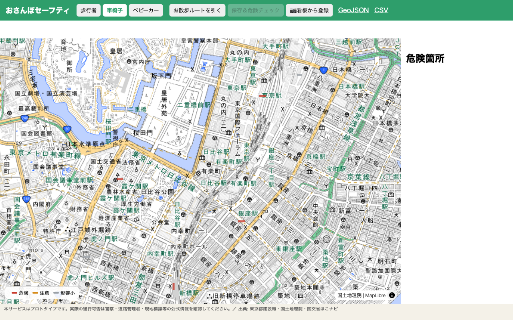
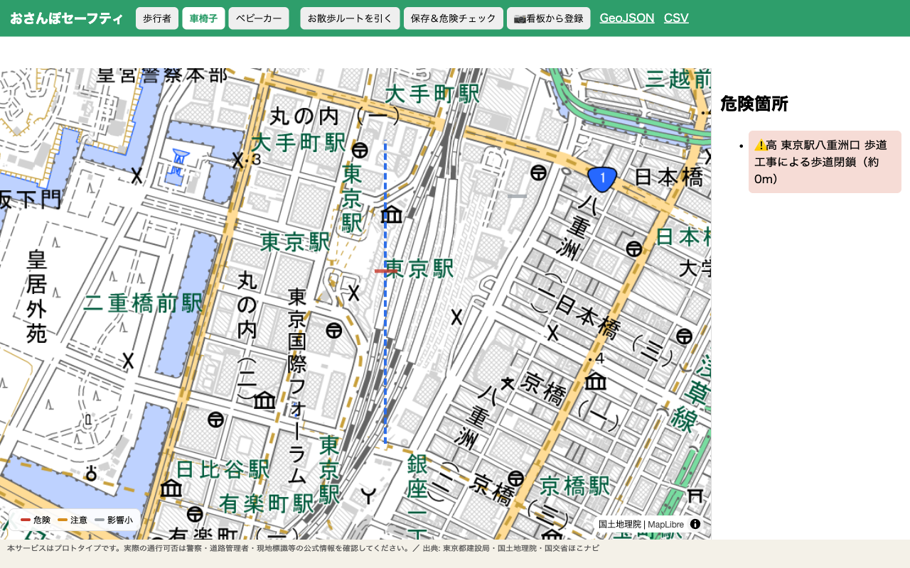
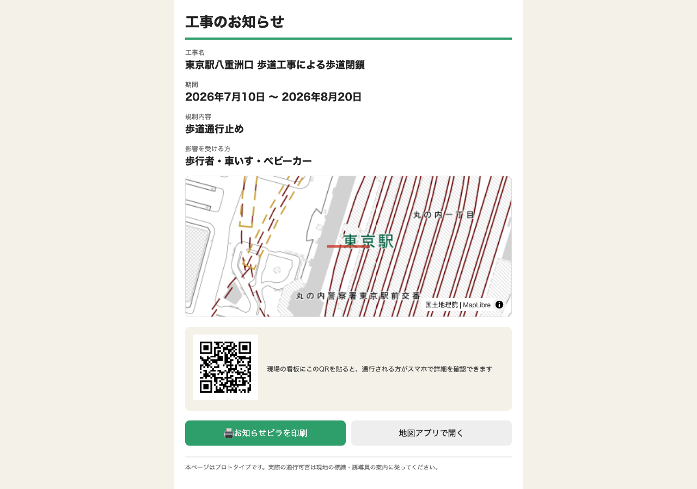

⏰ 申込締切: 7月27日(月) 17:00
📝 参加申込キット
都知事杯オープンデータ・ハッカソン2026 —「おさんぽセーフティ」。このページだけでスマホから申込が完結します。各項目は「コピー」を押してフォームに貼り付けてください。
▶ 申込フォームを開く
1基本情報
サービス案を短く聞かれたら 42字
工事による歩道規制を事前に知らせ、園児・車椅子のお散歩ルートの安全を守る地図サービス
2サービス概要 290字
着目した課題・背景、サービスの詳細（300字程度）
保育園のお散歩や特別支援学校の校外学習の下見（実踏）では、担当者が事前にルートの安全を確認しているが、工事による歩道の一時的な通行止めや狭小を事前に知る手段がない。歩道が塞がれると園児の列や車椅子は急な迂回を強いられ、車道側にはみ出す危険が生じる。「おさんぽセーフティ」は東京都の路上工事オープンデータ等を活用し、地図上に散歩ルートを引くだけで工事規制との交差を自動判定し、歩行者・車椅子・ベビーカー別に危険箇所を提示する。データは工事関係者が看板写真をAIに読み取らせるだけで登録でき、住民配布用のお知らせビラとQRコードを自動生成。既存の近隣周知業務の延長で規制データが育つ。
3プロダクト・技術詳細 294字
技術選定理由、生成AI活用方法、デモURL（300字程度）
Cloudflare上にフルサーバレスで構築（Pages/Workers/Hono/D1）。地図は国土地理院タイル＋MapLibre GL JSを採用し、APIキーやライセンス制約なく公開できる構成とした。ルートと規制の交差判定は線分間距離の幾何エンジンを実装し、同一の規制を歩行者・車椅子・ベビーカー別の注意度（低中高）に変換する。生成AIはClaudeのvision＋構造化出力を用い、工事看板の写真1枚から工事名・工期・規制種別をJSONで抽出し登録下書きを生成する。登録データはGeoJSON/CSV/APIで再配信し他サービスから再利用できる。デモURLは提出時までに公開予定。
4チーム実行力 258字
メンバー構成と役割（300字程度）
個人参加。企画・調査・設計・実装・テストの全工程を、生成AIエージェントを駆使した開発体制で一人で高速に回している。応募時点でMVP（リスク地図・利用者別リスク変換・お散歩ルートの危険自動判定・看板OCR登録・データ出力API）は実装済みで、自動テスト38件が全て通過している。またAIリサーチにより市場・競合・制度の調査を実施し、「工事による歩道の一時規制を動的に扱う国内サービスは空白領域」であることを確認した上で開発している。残期間は実データ拡充、Cloudflareへの公開、UI改善、プレゼン制作に充てる。
5オープンデータ利用状況
利用中または予定（最大10件）。まとめてコピーできます。
| データ | 状況 |
|---|
| 東京都建設局「23区内 都道の路上工事情報」(CC BY) | 利用中 |
| 国土地理院 地理院タイル | 利用中 |
| 国交省 歩行空間ネットワークデータ(ほこナビ) | 予定 |
| JARTIC 交通量オープンデータ | 予定 |
| 東京都オープンデータAPIカタログ(路上工事) | 予定 |
1. 東京都建設局「23区内 都道の路上工事情報」（CC BY）: 利用中。工事規制データとして取込
2. 国土地理院 地理院タイル: 利用中。ベースマップ
3. 国土交通省「歩行空間ネットワークデータ」（ほこナビ）: 利用予定。段差・幅員による車椅子リスク判定
4. JARTIC 交通量オープンデータ: 利用予定。規制の影響度スコアの重みづけ
5. 東京都オープンデータAPIカタログ（建設局 路上工事情報 JSON/XML）: 利用予定。更新自動化
6画面キャプチャ（最大3点）
📲 画像を長押し→「"写真"に保存」してから、フォームでアップロードしてください。

① リスク地図 — 車椅子モードで規制を危険度別に色分け表示（凡例つき）

② お散歩ルート危険判定 — ルートが東京駅の歩道閉鎖と交差し「⚠️高」を検出

③ 周知キット — 登録から自動生成される「工事のお知らせ」ページ（QR・印刷ビラ）
▶ 申込フォームを開く